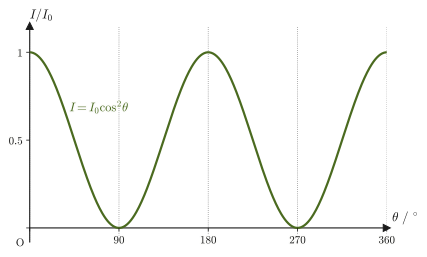
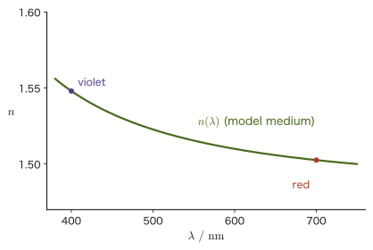

Chapter 13Fundamentals of Light Waves — Measuring the Speed of Light and the Refractive Index
In the previous chapter (Chapter 12), we practiced applying the general theory of waves (Chapter 11) to concrete phenomena by way of sound waves, which are longitudinal waves. Starting with this chapter, we deal with another familiar kind of wave—the light wave. Light is a wave of an entirely different character from sound. Sound cannot travel without a medium such as air, but light travels even through a vacuum (in fact, it travels fastest of all in vacuum). The speed of sound is determined by the medium and the air temperature and does not depend on the pitch (frequency) of the sound, whereas the speed of light in a material depends on the kind of medium and, in fact, also slightly on the color (wavelength) of the light (in vacuum it is a constant $c_0$, independent of wavelength). Moreover, even noticing that light travels at a finite speed was not easy for humanity—it is so fast that, until the seventeenth century, quite a few people thought that “light travels instantaneously.”
In this chapter, we first compare the properties of light waves and sound waves, and take up the phenomenon called “polarization,” which arises from the fact that light is a transverse wave. Next we define the “absolute refractive index,” which expresses how readily light propagates in different materials—this is a tool we will use in earnest in the next chapter (Reflection and Refraction of Light), and having the definition firmly in hand beforehand lets us see the rest of the discussion clearly. We then consider why “dispersion” (the dependence of speed on wavelength), which sound waves lack, occurs. Finally, we trace how the speed of light has been measured by following three historical methods—the astronomical method of Rømer (1676), Fizeau's method using a toothed wheel, and Foucault's method using a rotating mirror.
Almost no new mathematics is needed in this chapter (trigonometric functions and proportional relations are the main ingredients), but in one place we apply the result on forced oscillations learned in Chapter 7 to the motion of an electron subjected to an electric field. For that part alone, it is a good idea to briefly review Section 7.4 first.
- Compare the properties of light waves and sound waves (transverse versus longitudinal waves, what the speed depends on, the order of magnitude of the wavelength) and explain the physical reasons for each difference
- Understand the meaning of polarization and use Malus's law to calculate the intensity of light that has passed through a polarizer
- Understand the definition of the absolute refractive index and carry out calculations using the exact (defined) value of the speed of light, based on the definition of the meter in use since 1983
- Explain, from the picture of the forced oscillation of bound electrons, why light waves undergo dispersion in a medium whereas sound waves are hardly dispersed at all
- Explain the idea behind Rømer's astronomical measurement of the speed of light (the shift in the timing of the eclipses of Jupiter's moon Io)
- Understand the principles of Fizeau's experiment using a toothed wheel and of the experiment using a rotating mirror (Foucault's method), and calculate the speed of light from the parameters of the apparatus
Source notes: Yasuhide Mochizuki, Physics Notes: Waves, pp. 19–22.
13.1 Comparison of Light Waves and Sound Waves
Light, too, is a kind of wave. What it is that oscillates in light (namely, that light is an electromagnetic wave in which the electric field and the magnetic field oscillate) we will study in earnest from the next chapter on (the detailed mechanism is treated in Part V (Electromagnetism)). Here, let us confirm the basic properties of light waves by comparing them with the “sound waves” we have dealt with in Chapters 11 and 12. The following table compares light waves and sound waves from three viewpoints: the kind of wave, the speed in a medium, and the order of magnitude of the wavelength.
| Item | Light | Sound |
|---|---|---|
| Kind of wave | A transverse wave. Hence the phenomenon of directional bias (polarization) arises (Section 13.2). | Sound in gases and liquids is a longitudinal wave, so no phenomenon of directional bias arises. |
| Speed in a medium | Depends on the wavelength. Hence a spectrum is formed by dispersion when light is passed through a prism (Section 13.4). | Independent of frequency and wavelength. Hence no phenomenon such as dispersion occurs. |
| What determines the speed | The medium and the wavelength (color). In vacuum, however, it is constant regardless of wavelength ($c_0$). | The medium and the temperature of the medium (Section 12.1). |
| Order of magnitude of the wavelength | Short (about $10^{-7}\sim10^{-6}\ \mathrm{m}$). | Long (about $10^{-2}\sim10\ \mathrm{m}$). |
The difference in the order of magnitude of the wavelength is directly tied to how conspicuous diffraction is (the phenomenon of waves going around behind an obstacle, Section 11.9). When the size of an obstacle or a gap is sufficiently large compared with the wavelength, diffraction is hardly noticeable. The wavelength of light (for visible light, about $4\times10^{-7}\sim7\times10^{-7}\ \mathrm{m}$) is shorter by many orders of magnitude than the size of a gap at a door or of the objects around us (about $10^{-2}\sim1\ \mathrm{m}$), so unless special arrangements are made (such as a narrow slit, treated in Chapter 16), light's going around behind objects is practically never observed. On the other hand, the wavelength of sound is of the same order of magnitude as the size of the objects around us, so diffraction appears markedly, just as we can ordinarily hear the voice of a person behind a wall or beyond an open door even though we cannot see that person directly.
The difference in what determines the speed is also important. The speed of sound is determined by the kind of medium (gas, liquid, solid) and the temperature, and does not depend on the pitch (frequency) of the sound (Section 12.1, $V=331.5+0.6t\ [\mathrm{m/s}]$). In contrast, the speed of light in a material depends not only on the kind of medium but also slightly on the wavelength (color) of the light (in vacuum, light of any color travels at the same speed $c_0$). The physical reason for this difference is considered in detail in Section 13.4.
Next, let us pin down what the “directional bias” in the first row of the table means. Hold one end of a rope in your hand and shake it up and down to make a wave; the vibration of the rope is confined to a single vertical plane (Figure 13.1(a)). If we pass this rope through a board with a narrow gap elongated in the vertical direction (a vertical slit), the up-and-down vibration of the rope passes through as it is. However, if we then place after it a board with a narrow gap elongated in the horizontal direction (a horizontal slit), the rope cannot move up and down, so the vibration stops there. In this way, when the direction of vibration of a transverse wave is confined to a single plane, the wave is said to be “biased.”
Definition 13.1: Polarization
When the direction of vibration (the direction of displacement) of a transverse wave is confined to a single plane containing the direction in which the wave travels, the wave is said to be polarized, or to be linearly polarized light (there also exist circularly polarized light and elliptically polarized light, in which the direction of vibration rotates with time, but in this book we treat only linearly polarized light). Light in which vibrations in all directions are mixed together (not biased toward any particular direction), such as sunlight or the light of a light bulb, is called unpolarized (natural) light. Sound in gases and liquids is a longitudinal wave, whose direction of vibration can lie only along the one straight line that always coincides with the direction of propagation, so there is no room to “choose a plane of vibration” in the first place, and the phenomenon of polarization does not exist.
Example 13.1: Ease of diffraction of sound and light
Find the wavelength $\lambda_{\text{sound}}$ of sound of frequency $440\ \mathrm{Hz}$ (the middle A of the piano) traveling in air at $20\ {}^{\circ}\mathrm{C}$, and the wavelength $\lambda_{\text{light}}$ (in vacuum) of light of frequency $5.5\times10^{14}\ \mathrm{Hz}$ (light that looks green). Also answer which of sound and light diffracts noticeably around an open door about $1.0\ \mathrm{m}$ wide.
Solution. By the formula in Section 12.1, the speed of sound at temperature $t=20\ {}^{\circ}\mathrm{C}$ is
$$ V=331.5+0.6\times20=331.5+12=343.5\ \mathrm{m/s} $$From the basic relation of waves, $V=f\lambda$ (Section 11.4),
$$ \lambda_{\text{sound}}=\frac{V}{f}=\frac{343.5\ \mathrm{m/s}}{440\ \mathrm{Hz}}\approx0.78\ \mathrm{m} $$For light, on the other hand, using its speed in vacuum $c_0=299\,792\,458\ \mathrm{m/s}$ (the defined value, treated again in Section 13.3),
$$ \lambda_{\text{light}}=\frac{c_0}{f}=\frac{2.998\times10^8\ \mathrm{m/s}}{5.5\times10^{14}\ \mathrm{Hz}}\approx5.45\times10^{-7}\ \mathrm{m}\approx545\ \mathrm{nm} $$(This is consistent with the rule of thumb that the wavelength of green light is about $550\ \mathrm{nm}$.) Compared with the door width of $1.0\ \mathrm{m}$, $\lambda_{\text{sound}}\approx0.78\ \mathrm{m}$ is of the same order of magnitude, so sound diffracts markedly and goes around behind the door (this is why a voice beyond the door can be heard). In contrast, $\lambda_{\text{light}}\approx5.45\times10^{-7}\ \mathrm{m}$ is only about $1.8\times10^{-6}$ times the door width (about 1/1,800,000, smaller by roughly six orders of magnitude), so the diffraction of light can be almost ignored, and the region behind the door is an almost perfect shadow (taking light to travel in straight lines).
13.2 Polarization and Malus's Law
The device used to produce and to examine polarized light is the polarizer. A polarizer is a plate that transmits only the component vibrating along one particular direction—called the transmission axis—and does not transmit (it absorbs) the component perpendicular to it. An arrangement in which two polarizers are stacked so that their transmission axes are perpendicular to each other is called crossed Nicols (the name comes from the fact that “Nicol prisms” made of calcite were once used as elements for producing polarized light; the same name is still used for present-day polarizers).
If you stack two items such as polarized sunglass lenses and look at the bright sky through them while rotating one of them, the brightness changes, and it goes completely dark when it has been rotated by $90^{\circ}$. Why does it become dark? The intensity of light passing through a polarizer depends on the direction of the polarizer's transmission axis. The relation that expresses this quantitatively is the following Malus's law (discovered in 1809 by Malus of France).
Derivation: Malus's law
Consider linearly polarized light of amplitude $E_0$ (with a fixed direction of vibration) incident on a polarizer whose transmission axis is tilted by an angle $\theta$ from the direction of vibration. The quantity that represents the vibration of the wave (strictly speaking it is the electric field, but here we simply call it the “magnitude of the vibration”) can be decomposed into a component along the transmission axis and a component perpendicular to it. Since the polarizer transmits only the component parallel to the transmission axis, the amplitude of the vibration after passing through is the incident amplitude $E_0$ projected onto the direction of the transmission axis:
$$ E=E_0\cos\theta $$(Between two directions making an angle $\theta$, projecting a component along one direction onto the other direction multiplies it by $\cos\theta$; this is the same relation that we confirmed in Part I when we studied the inner product (dot product) of vectors.) The intensity $I$ of a wave is proportional to the square of the amplitude for waves of the same frequency (Section 11.5: in the relation $I\propto A^2f^2$, if the frequency $f$ is the same then $I\propto A^2$. For light, the intensity is proportional to the square of the amplitude of the electric field, as we will learn precisely in Part V). Therefore, if the intensity of the incident light is $I_0\propto E_0^2$, the intensity of the transmitted light satisfies
$$ I\propto E^2=E_0^2\cos^2\theta\propto I_0\cos^2\theta $$Checking the constant of proportionality (when $\theta=0$ the transmission axis coincides with the direction of vibration and the light passes through without attenuation, so we must have $I=I_0$), we find that
$$ I=I_0\cos^2\theta $$holds.
∎
Law 13.1: Malus's law
When linearly polarized light of intensity $I_0$ passes through a polarizer whose transmission axis is tilted by an angle $\theta$ from the direction of vibration, the intensity $I$ after passing through is given by
\begin{equation} I=I_0\cos^2\theta \label{eq:13-malus-thm} \end{equation}In particular, when $\theta=90^{\circ}$ (the transmission axis perpendicular to the direction of vibration, the “crossed Nicols” state), $I=0$, and no light passes through at all.
Caution: Passing unpolarized light through a polarizer
Unpolarized (natural) light can be regarded as a mixture of vibrations in all directions with equal strength. When unpolarized light is passed through the first polarizer, only the fraction given by the value obtained by averaging $\cos^2\theta$ over all directions $\theta$, that is, $\langle\cos^2\theta\rangle=\frac12$, gets through (that the average of $\cos^2\theta$ over one period is $1/2$ follows from the identity $\cos^2\theta=\frac{1+\cos2\theta}{2}$, using the fact that the average of $\cos2\theta$ is zero), and the intensity is halved to $I_0/2$. For the second and later polarizers, we need only apply Eq. \eqref{eq:13-malus-thm} as it stands, taking the transmission axis of the immediately preceding polarizer as the new “direction of vibration.”

Example 13.2: Light passing through two polarizers
Unpolarized light of intensity $I_0=100\ \mathrm{W/m^2}$ is passed through a first polarizer and then through a second polarizer whose transmission axis is tilted by $30^{\circ}$ from that of the first. Find the intensity $I_2$ of the light after it passes through the second polarizer.
Solution. Since the light is unpolarized, the intensity immediately after the first polarizer is
$$ I_1=\frac{I_0}{2}=\frac{100}{2}=50\ \mathrm{W/m^2} $$and this light is linearly polarized along the transmission axis of the first polarizer. The transmission axis of the second polarizer is tilted by $\theta=30^{\circ}$ from this direction of vibration, so by Malus's law (Eq. \eqref{eq:13-malus-thm}),
$$ I_2=I_1\cos^2\theta=50\times\cos^2 30^{\circ}=50\times\left(\frac{\sqrt3}{2}\right)^2=50\times\frac34=37.5\ \mathrm{W/m^2} $$This is the required intensity.
Application: Everyday uses of polarization
Light reflected from a water surface or a glass surface may become strongly polarized, depending on the angle of reflection (a detailed explanation of this phenomenon is not given in this book), so polarized sunglasses selectively cut the glare (reflected light) from the water surface and make it easier to see what is in the water. A liquid-crystal display (LCD) also has a structure in which a liquid crystal is sandwiched between two polarizers (crossed Nicols) whose transmission axes are perpendicular. When no voltage is applied, the liquid crystal twists the plane of polarization of the light by about $90^{\circ}$, so the light passes through; when a voltage is applied and the molecules are aligned, the twist is undone and the light no longer passes. By controlling this voltage pixel by pixel, the display adjusts the amount of light (the brightness) passing through each pixel—this is an example of Malus's law actually being used inside familiar electronic devices.
13.3 The Absolute Refractive Index
The standard that tells us how fast light travels is the speed of light in vacuum. The speed of light in vacuum is greater than the speed of light in ordinary transparent materials; light usually travels more slowly in a material than in vacuum. The quantity that expresses numerically the “difficulty light has in advancing” in each material is the following absolute refractive index. How the value of this constant has been measured is something we will follow historically in Sections 13.5–13.7.
First, let us recall the relative refractive index introduced in Section 11.8. The relative refractive index of medium 2 with respect to medium 1 is $n_{12}=v_1/v_2$, where $v_1,v_2$ are the speeds of the wave in the respective media. The refractive index obtained by choosing a vacuum as this reference medium 1 is the following absolute refractive index.
Definition 13.2: Absolute refractive index
The relative refractive index of a material with respect to a vacuum is called the absolute refractive index of that material (also called simply the refractive index). Let $v$ be the speed of light traveling in the material and $c_0$ the speed of light in vacuum; then we can write
\begin{equation} n\equiv\frac{c_0}{v} \label{eq:13-index-def} \end{equation}(a dimensionless quantity). In vacuum $v=c_0$, so the absolute refractive index of a vacuum is $n=1$. In ordinary transparent materials for visible light (air, water, glass, and so on), light travels more slowly than in vacuum ($v\lt c_0$), so $n\gt1$.
If the absolute refractive indices of two materials 1 and 2 are $n_1=c_0/v_1$ and $n_2=c_0/v_2$, then the relative refractive index of material 2 with respect to material 1 is
$$ n_{12}=\frac{v_1}{v_2}=\frac{c_0/n_1}{c_0/n_2}=\frac{n_2}{n_1} $$Thus the relative refractive index can be expressed as the ratio of the absolute refractive indices. It is thanks to this relation that the law of refraction (Law 11.6) learned in Chapter 11 can be rewritten in the form $n_1\sin\theta_1=n_2\sin\theta_2$ in Chapter 14.
| Material | Absolute refractive index $n=c_0/v$ | Speed of light in the material $v=c_0/n$ |
|---|---|---|
| Air | $n_{\text{air}}=c_0/v_{\text{air}}\approx1$ (more precisely, about $1.0003$) | Nearly the same as in vacuum ($\approx3.0\times10^8\ \mathrm{m/s}$) |
| Water | $n_{\text{water}}=c_0/v_{\text{water}}\approx1.3$ (more precisely, about $1.33$) | About $1/1.33$ of the speed in vacuum, that is, about $2.25\times10^8\ \mathrm{m/s}$ |
| Glass (depending on the type) | $n_{\text{glass}}=c_0/v_{\text{glass}}\approx1.3\sim1.5$ | About $2.3\times10^8\sim2.0\times10^8\ \mathrm{m/s}$ |
The values in Table 13.2 are only rough guides; even for the same material the refractive index changes slightly with the wavelength (color) of the light (dispersion; we study its physical reason in detail in Section 13.4). Unless stated otherwise, the numerical value that we treat as the “refractive index $n$” from the next chapter (Chapter 14) onward is this absolute refractive index.
Caution: Is it never the case that $n\lt1$?
For ordinary transparent materials and visible light, $n\gt1$, but this is not always so. In the X-ray region, the refractive index of a material becomes slightly smaller than 1 ($n\lt1$). This means that the speed at which a wave crest advances (the phase velocity) $c_0/n$ exceeds $c_0$, but it does not contradict the theory of relativity, because what carries information and energy is the group velocity, the speed at which a wave packet (a lump of waves) advances, and this does not exceed $c_0$ (we study group velocity in Section 17.5). In Eq. \eqref{eq:13-dispersion-n2} of Section 13.4, too, $n\lt1$ in the high-frequency region ($\omega\gt\omega_0$).
There is also an important remark about the value of the speed of light in vacuum, $c_0$, itself.
Intuition: Why is the speed of light “exact”? — The definition of the meter
In 1983 the definition of the meter in the International System of Units (SI) was revised, and since then it has been defined as follows: “One meter is the distance that light travels in vacuum in $\dfrac{1}{299\,792\,458}$ of a second.” That is, because the unit of length (the meter) itself is fixed on the basis of the speed of light, the value of the speed of light in vacuum, $c_0$, is no longer a quantity that becomes known only by measuring it in an experiment; it is a constant fixed by definition to be exactly $299\,792\,458\ \mathrm{m/s}$. In the days of Fizeau and Foucault, the speed of light was an “unknown quantity to be determined by measurement,” but today, conversely, it is the unit of length that is fixed on the basis of the value of the speed of light. Note also that the values obtained in the experimental examples that we will see in Sections 13.5–13.7 (about $2.99\sim3.00\times10^8\ \mathrm{m/s}$) are numerical examples imitating historical experiments in which the measurements had errors, and are not the present defined value itself.
In this way, the speed of light was once itself the question of “how can it be measured?” After considering in the next section, Section 13.4, why the speed of light depends on the wavelength, we will trace the history of its measurement from Section 13.5 onward.
Example 13.3: The speed of light in glass, and the distance light travels in one nanosecond
(1) Find the speed $v$ of light traveling in glass of absolute refractive index $n=1.50$. Also find the time it takes light to pass through a plate of this glass of thickness $5.0\ \mathrm{mm}$.
(2) Find the distance that light travels in vacuum in $1.0\ \mathrm{ns}=1.0\times10^{-9}\ \mathrm{s}$.
Solution. (1) By Definition 13.2 (Eq. \eqref{eq:13-index-def}),
$$ v=\frac{c_0}{n}=\frac{2.997\,924\,58\times10^8\ \mathrm{m/s}}{1.50}\approx1.9986\times10^8\ \mathrm{m/s}\approx2.00\times10^8\ \mathrm{m/s} $$The time to pass through the thickness $d=5.0\times10^{-3}\ \mathrm{m}$ is, from the relation $t=d/v$ for motion at constant speed (Chapter 1),
$$ t=\frac{d}{v}=\frac{5.0\times10^{-3}\ \mathrm{m}}{1.9986\times10^8\ \mathrm{m/s}}\approx2.5\times10^{-11}\ \mathrm{s}=25\ \mathrm{ps} $$(2) In vacuum $v=c_0$, so
$$ d=c_0\times t=2.997\,924\,58\times10^8\ \mathrm{m/s}\times1.0\times10^{-9}\ \mathrm{s}\approx0.30\ \mathrm{m} $$That is, in one nanosecond light travels only about $30\ \mathrm{cm}$—the length of a single $30\ \mathrm{cm}$ ruler. This is exactly the relation in the “definition of the meter” just given, and is the flip side of the fact that light travels $1\ \mathrm{m}$ in $1/299\,792\,458$ of a second (about $3.34\ \mathrm{ns}$).
13.4 Differences in Dispersion between Sound Waves and Light Waves
As we saw in Table 13.1, the speed of sound does not depend on the frequency (wavelength), whereas the speed of light in a medium changes with the wavelength—this phenomenon is called dispersion. Why does this difference arise? The key lies in the mechanism by which the medium that carries the wave produces its “force that tries to bring it back to its original state” (the restoring force).
Intuition: Why sound does not show dispersion
A sound wave propagating through a gas is a longitudinal wave in which regions of high pressure and regions of low pressure form alternately, and its restoring force originates from the macroscopic elasticity (compressibility) exhibited by the collection of gas molecules. The formula for the speed of sound (which we derived ahead of time in Section 12.1) is essentially of the form $V=\sqrt{\gamma R T/M}$ ($\gamma$: heat capacity ratio, $M$: molar mass); what determines the speed of sound is only macroscopic properties of the gas such as its temperature and composition, and the frequency of the sound appears nowhere in the formula. In the audible range (roughly $20\ \mathrm{Hz}\sim20\ \mathrm{kHz}$), one period of the sound wave is far longer than the time scale over which collisions between gas molecules produce this macroscopic elasticity. In other words, to sound, the gas looks like “a featureless continuum that behaves elastically in the same way regardless of the frequency.” This is why sound in the audible range shows almost no dispersion.
In contrast, when light (an electromagnetic wave) propagates through a transparent substance, the restoring force of the substance originates from the electrons bound in atoms and molecules being shaken by the electric field (driven into forced oscillation)—and the motion of these electrons is precisely the forced-oscillation problem we studied in Section 7.4.
Derivation: Forced oscillation of a bound electron in an electric field
An electron in an atom or molecule experiences a force from the positive nucleus (and the electric field produced by the nucleus) that pulls it back to its equilibrium position. For small displacements, this restoring force can be regarded as proportional to the displacement, as in Hooke's law (the same idea as in the introduction of Section 7.1). Let the mass of the electron be $m_{\mathrm e}$, and let the quantity corresponding to the “spring constant” of the restoring force be $m_{\mathrm e}\omega_0^2$ ($\omega_0$: the angular frequency of the electron's natural oscillation, a positive constant determined by the substance). Then the equation of motion in the absence of an external force is $m_{\mathrm e}\ddot x=-m_{\mathrm e}\omega_0^2x$, which has exactly the same form as the mass–spring system of Section 7.1 (simple harmonic motion with angular frequency $\omega_0$).
When light oscillating with angular frequency $\omega$ (let the amplitude of the electric field be $E_0$) is incident on it, the electron, which has charge $-e$ ($e$ is the elementary charge, $e=1.602\,176\,634\times10^{-19}\ \mathrm{C}$; it is a different quantity from Napier's number $e$, so we distinguish them by context), experiences the force $-eE_0\cos\omega t$, as we saw in Illustration 7.1. Therefore the equation of motion is
$$ m_{\mathrm e}\ddot x=-m_{\mathrm e}\omega_0^2x-eE_0\cos\omega t \qquad\text{that is}\qquad m_{\mathrm e}\ddot x+m_{\mathrm e}\omega_0^2x=-eE_0\cos\omega t $$This is nothing other than the special case of the forced-oscillation equation $m\ddot x+n\dot x+kx=f_0\cos\omega t$ of Section 7.4 in which there is no resistance ($n=0$; this corresponds to the fact that light is hardly absorbed in a transparent substance, and this $n$ is the drag coefficient and has nothing to do with the refractive index), with $k=m_{\mathrm e}\omega_0^2$ and $f_0=-eE_0$.
The steady-state response formula of Section 7.4 (the rectangular form of $x_0(t)$) was $x_0(t)=\dfrac{(k-m\omega^2)\cos\omega t+n\omega\sin\omega t}{(k-m\omega^2)^2+(n\omega)^2}f_0$. Substituting $n=0$, the $\sin\omega t$ term vanishes, and the $(k-m\omega^2)^2$ in the denominator cancels against the $(k-m\omega^2)$ in the numerator, giving
$$ x_0(t)=\frac{f_0\cos\omega t}{k-m\omega^2}=\frac{-eE_0\cos\omega t}{m_{\mathrm e}\omega_0^2-m_{\mathrm e}\omega^2} $$In summary, the steady-state response of the electron's displacement is
\begin{equation} x_0(t)=\frac{-eE_0}{m_{\mathrm e}(\omega_0^2-\omega^2)}\cos\omega t \label{eq:13-electron-response} \end{equation}(Check: substituting $x=X\cos\omega t$ directly into the equation of motion, we have $\ddot x=-\omega^2X\cos\omega t$, so $m_{\mathrm e}(\omega_0^2-\omega^2)X=-eE_0$, and we obtain $X=-eE_0/[m_{\mathrm e}(\omega_0^2-\omega^2)]$. This agrees with Eq. \eqref{eq:13-electron-response}.)
∎
Let us read off the meaning of Eq. \eqref{eq:13-electron-response}. When the driving angular frequency is smaller than the natural angular frequency ($\omega\lt\omega_0$), the denominator is positive, so the electron oscillates in the direction opposite to the electric field (the same direction as the force $-eE$ on the electron) and sways in phase with the electric field. When $\omega\gt\omega_0$, the denominator becomes negative, and the electron oscillates in antiphase with the force (at the resonance $\omega=\omega_0$ the amplitude diverges, since we are neglecting the resistance here).
Now, why does the speed of light (the refractive index) change when the electrons oscillate? We show only the outline of the argument (we will learn the details in Section 41.1 (Dielectrics and Polarization) and in Chapter 42 (on electromagnetic waves)). When an electron of charge $-e$ is displaced by $x_0$ from its equilibrium position, the position of the positive charge does not move, so a pair of positive and negative charges (an electric dipole) is formed, and its dipole moment is $p=-e\,x_0$. If there are $N_{\mathrm e}$ electrons per unit volume, the dipole moment per unit volume (the polarization $P$) is, by Eq. \eqref{eq:13-electron-response},
$$ P=-N_{\mathrm e}e\,x_0=\frac{N_{\mathrm e}e^2E_0}{m_{\mathrm e}(\omega_0^2-\omega^2)}\cos\omega t $$That is, for $\omega\lt\omega_0$ the polarization points in the same direction as the electric field $E=E_0\cos\omega t$. In matter, this polarization acts in the direction of “canceling” or “strengthening” the electric field, and the permittivity for light changes from the vacuum value $\varepsilon_0$ to $\varepsilon_0(1+P/(\varepsilon_0E))$. The square of the refractive index equals this relative permittivity (for a substance without magnetic properties), so $n^2=1+P/(\varepsilon_0E)$. Substituting the above $P$ into this (neglecting the influence of the electrons on one another and considering a dilute substance), the refractive index of a substance in which $N_{\mathrm e}$ electrons per unit volume respond in this way is
\begin{equation} n(\omega)^2=1+\frac{N_{\mathrm e}e^2}{\varepsilon_0m_{\mathrm e}\left(\omega_0^2-\omega^2\right)} \label{eq:13-dispersion-n2} \end{equation}($\varepsilon_0$: vacuum permittivity). This is the result of the classical theory of dispersion—a model that regards electrons as tiny springs shaken by the electric field. From Eq. \eqref{eq:13-dispersion-n2}, we see that $n$ becomes larger the closer $\omega$ approaches $\omega_0$ (the closer the denominator $\omega_0^2-\omega^2$ approaches 0), and that in the visible range ($\omega\lt\omega_0$, where $\omega_0$ usually lies in the ultraviolet region), $n$ is larger for light with larger $\omega$ (shorter wavelength $\lambda=2\pi c_0/\omega$). This is the physical origin of the change of the refractive index with wavelength—dispersion.
Caution: Limitations of this model
Eq. \eqref{eq:13-dispersion-n2} is the simplest model, which assumes that the electron has only a single natural angular frequency $\omega_0$ and, moreover, that there is no resistance (damping). Real substances have several resonance angular frequencies (besides the resonance of the electrons in the ultraviolet region, there are resonances due to vibrations of the atomic nuclei in the infrared region, and so on), and near each resonance light is absorbed (the substance ceases to be transparent). Moreover, the divergence $n\to\infty$ as $\omega\to\omega_0$ arises because we neglected the resistance; in reality, because of the resistance, $n$ stays finite. And at high frequencies $\omega\gt\omega_0$ (X-rays, etc.), we get $n\lt1$ (the Caution in Section 13.3). If we look only at the transparent region of visible light, this model is a good approximation.
Derivation: Approximate formula in the visible range (Cauchy's formula)
The angular frequency $\omega$ of visible light is smaller than the natural angular frequency $\omega_0$ of the electrons of the substance (which lies in the ultraviolet region for many transparent substances). We therefore rewrite the second term on the right-hand side of Eq. \eqref{eq:13-dispersion-n2} in terms of powers of $(\omega/\omega_0)^2$. Let $\chi_0\equiv N_{\mathrm e}e^2/(\varepsilon_0m_{\mathrm e}\omega_0^2)$ (the value of the second term on the right-hand side in the limit $\omega\to0$; a positive dimensionless constant, determined by the substance, that expresses how easily the electrons are polarized by a static electric field). Then
$$ n(\omega)^2=1+\frac{\chi_0}{1-(\omega/\omega_0)^2} $$and substituting $\omega=2\pi c_0/\lambda$ ($c_0$: the speed of light in vacuum; the relation among the wavenumber, the wavelength, and the angular frequency, Section 11.4) gives $\omega/\omega_0=(2\pi c_0/\omega_0)/\lambda\equiv\lambda_0/\lambda$ ($\lambda_0\equiv2\pi c_0/\omega_0$ is the wavelength corresponding to the natural oscillation of the electron), so that
\begin{equation} n(\lambda)^2=1+\frac{\chi_0}{1-(\lambda_0/\lambda)^2} \label{eq:13-cauchy} \end{equation}is obtained. In the case $\lambda\gg\lambda_0$ (the wavelength of visible light is much longer than the wavelength corresponding to the natural oscillation of the electron), $(\lambda_0/\lambda)^2\ll1$, so we can further approximate $\dfrac{1}{1-(\lambda_0/\lambda)^2}\approx1+(\lambda_0/\lambda)^2$ (the Taylor expansion in University Mathematics, Section 4.2, the first-order approximation $\frac{1}{1-x}\approx1+x$), and $n^2\approx(1+\chi_0)+\chi_0(\lambda_0/\lambda)^2$. Rewriting this as $n\approx\sqrt{1+\chi_0}\left(1+\dfrac{\chi_0\lambda_0^2}{2(1+\chi_0)\lambda^2}\right)$ (where we used $\sqrt{1+u}\approx1+u/2$), we obtain the form $n(\lambda)\approx A+B/\lambda^2$ with constants $A,B$. This has the same form as the empirical formula (Cauchy's dispersion formula) that Cauchy found experimentally in the nineteenth century, so from the bound-electron model of Eq. \eqref{eq:13-dispersion-n2} we have been able to derive theoretically the empirical rule that the shorter the wavelength, the larger the refractive index.
Note that this first-order approximation is good only when $\lambda\gg\lambda_0$. For the violet light of Example 13.4 ($\lambda=400\ \mathrm{nm}$), $(\lambda_0/\lambda)^2=0.14$, and the approximation gives the refractive index of violet light as $1.540$ (exactly $1.548$) and the difference $\Delta n$ between colors as about $0.038$ (exactly $0.045$), that is, about 16% too small. For this reason, Example 13.4 does not use the approximation and calculates with the exact Eq. \eqref{eq:13-cauchy}.
∎
Example 13.4: Wavelength dependence of the refractive index in the dispersion model
Suppose that a model medium exhibits the dispersion given by Eq. \eqref{eq:13-cauchy} with $\chi_0=1.2$ and $\lambda_0=150\ \mathrm{nm}$ (in the ultraviolet region). Find the refractive indices for red light ($\lambda_{\text{red}}=700\ \mathrm{nm}$) and violet light ($\lambda_{\text{violet}}=400\ \mathrm{nm}$), and answer which is larger.
Solution. We substitute the numerical values into Eq. \eqref{eq:13-cauchy}. For red light,
$$ n_{\text{red}}^2=1+\frac{1.2}{1-(150/700)^2}=1+\frac{1.2}{1-0.0459}=1+\frac{1.2}{0.9541}\approx2.258 \quad\therefore\ n_{\text{red}}\approx1.503 $$For violet light,
$$ n_{\text{violet}}^2=1+\frac{1.2}{1-(150/400)^2}=1+\frac{1.2}{1-0.1406}=1+\frac{1.2}{0.8594}\approx2.396 \quad\therefore\ n_{\text{violet}}\approx1.548 $$Therefore $n_{\text{violet}}\approx1.548\gt n_{\text{red}}\approx1.503$, and violet light, which has the shorter wavelength, has the larger refractive index (Figure 13.4). The difference is $\Delta n=n_{\text{violet}}-n_{\text{red}}\approx0.045$.

Caution: Dispersion of sound beyond the audible range
Strictly speaking, even for sound it is not the case that dispersion is absolutely absent. It is known that the speed of sound depends slightly on the frequency at very high frequencies such as those of ultrasound, or in special situations where the relaxation of the rotational and vibrational motions of gas molecules can no longer keep up. In the audible range (the range of sounds that people hear in everyday life), however, this effect is too small to be measured, and the statement in Table 13.1 that the speed “does not depend” on frequency is a practically valid approximation.
13.5 Is the Speed of Light Finite? — Rømer's Astronomical Discovery (1676)
Because the speed of light is so enormous, until about the seventeenth century quite a few people believed that “light travels instantaneously (has infinite speed)” (Descartes, among others, argued this). What changed this situation was the discovery made in 1676 by the Danish astronomer Ole Rømer (1644–1710).
Intuition: Why does the timing of the eclipses of Jupiter's moon tell us the speed of light?
Jupiter's moon Io orbits Jupiter with a nearly constant orbital period of $T\approx1.77$ days (about 42.5 hours), and it regularly repeats, with this period, the “eclipse” in which it enters Jupiter's shadow. If light traveled instantaneously, the time from one eclipse to the next would be the same $T$ wherever the Earth might be.
Rømer, who had been continuously observing the timing of these eclipses at the Paris Observatory, noticed that during the period when the Earth is approaching Jupiter, the interval between one eclipse and the next is slightly shorter than predicted, whereas during the period when the Earth is receding from Jupiter it is longer, and that over the roughly half year of receding these discrepancies accumulate, so that an eclipse is observed more than ten minutes later than predicted. He correctly interpreted this as being due to the fact that the distance the light from Jupiter (and Io) must travel to reach the Earth changes as the Earth revolves—if the Earth recedes, the light from the moment of the eclipse takes correspondingly longer to arrive, so the observed time of the eclipse appears delayed, he reasoned (Figure 13.5).
The shift for each single eclipse is, in fact, very small. If during one period $T$ the Earth recedes from Jupiter (along the line of sight) at speed $v$, the path length of the light increases by $vT$, so the light of the next eclipse arrives later by $vT/c_0$. Taking $v\approx3.0\times10^4\ \mathrm{m/s}$, the orbital speed of the Earth, as the maximum value and inserting $T\approx1.53\times10^5\ \mathrm{s}$, we obtain
$$ \frac{vT}{c_0}\approx\frac{(3.0\times10^4\ \mathrm{m/s})(1.53\times10^5\ \mathrm{s})}{3.0\times10^8\ \mathrm{m/s}}\approx15\ \mathrm{s} $$A shift of about 15 seconds in the interval between eclipses (a fraction $v/c_0\approx10^{-4}$ in relative terms) is hard to measure in a single observation. During the roughly half year in which the Earth recedes, however, there are about 100 eclipses, and the shifts accumulate until they reach more than ten minutes (by the modern value, about $16.6$ minutes, the time light takes to travel the diameter of the Earth's orbit, $2\ \mathrm{au}$). Since this accumulated delay $\Delta t$ corresponds to the time light takes to travel a distance equal to the diameter of the Earth's orbit, the speed of light is obtained from
$$ c_0=\frac{\text{diameter of the Earth's orbit (about }2\ \mathrm{au}\text{)}}{\text{accumulated delay }\Delta t} $$Rømer's estimate was $\Delta t\approx22$ minutes ($1\,320\ \mathrm{s}$), which is larger than the modern value (about $16.6$ minutes), and the speed of light that Huygens calculated from this estimate, using the value of the astronomical unit of the time, was about $2.2\times10^8\ \mathrm{m/s}$ (about three-fourths of the present value). Because the accurate size of the astronomical unit (the Earth–Sun distance) was not yet known at that time, the numerical value itself was not as precise as the values known today; nevertheless, the discovery that “light travels with a finite speed” was a landmark achievement that came more than 170 years before the later terrestrial measurements by Fizeau and Foucault (Sections 13.6 and 13.7).
Example 13.5: The time light takes to cross the Earth's orbit
Find the time it takes light to travel the diameter of the Earth's orbit (2 astronomical units, $1\ \mathrm{au}=1.495\,978\,707\times10^{11}\ \mathrm{m}$, an exact (defined) value set by the International Astronomical Union).
Solution. Letting $c_0=299\,792\,458\ \mathrm{m/s}$ be the speed of light in vacuum (an exact (defined) value, Section 13.3), the required time is
$$ \Delta t=\frac{2\times1.495\,978\,707\times10^{11}\ \mathrm{m}}{2.997\,924\,58\times10^8\ \mathrm{m/s}}\approx998\ \mathrm{s}\approx16.6\ \mathrm{min} $$Rømer's own estimate (about 22 minutes, $1\,320\ \mathrm{s}$) is larger than this modern value (about $16.6$ minutes), and as a result the speed of light he obtained, roughly $2\times1.496\times10^{11}\ \mathrm{m}/1\,320\ \mathrm{s}\approx2.3\times10^8\ \mathrm{m/s}$, was somewhat smaller than the true value (Huygens's calculation gave about $2.2\times10^8\ \mathrm{m/s}$). Even so, it was of great significance that, as early as the seventeenth century, the time light takes to cross a distance on the scale of the Earth's orbit was estimated, using the astronomical phenomenon of the eclipses of Jupiter's moon, to be on the order of ten minutes.
13.6 Measuring the Speed of Light (1) — Fizeau's Experiment
Rømer's method relied on astronomical observations, but in the mid-nineteenth century methods were devised for measuring the speed of light in a terrestrial laboratory alone. The first successful example was the experiment with a rotating toothed wheel performed in 1849 by Fizeau of France.
Caution: Reuse of the letter $n$
The “number of revolutions of the toothed wheel per second, $n$” that appears below is a different quantity, entirely unrelated to the absolute refractive index $n$ defined in Section 13.3. It is common in physics for the same letter to be used with completely different meanings (this book also cautions about this repeatedly in other parts), so distinguish them by context.
The apparatus is as shown in the upper half of Figure 13.6. Light from the source is reflected by a half-silvered mirror (placed at a $45^{\circ}$ tilt), which reflects part of the light and transmits part of it, so that the light heads to the left, passes through a gap in the rim of the rotating toothed wheel, and travels to a mirror a distance $L$ away. The light reflected by the mirror returns along the same path, passes through the rim of the wheel once more, and then passes through the half-silvered mirror (this time by transmission) to reach the observer's eye.
Derivation: The formula for the speed of light from Fizeau's experiment
Let the rotation rate of the toothed wheel be $n\ [\mathrm{/s}]$ (the number of revolutions per second) and the number of teeth be $N$. Around the rim of the wheel, teeth and the gaps between them alternate, with the same number $N$ of each, and a tooth and a gap are assumed to have equal widths. The time for one revolution of the wheel is $1/n$, and during that time $N$ pairs of “one tooth plus one gap” (one pitch each) pass by. Therefore the time it takes the wheel to turn through one pitch is the time for one revolution divided by $N$,
$$ \frac{1}{nN} $$and the time it takes to turn from the center of a gap to the center of the adjacent tooth, that is, through half a pitch, is $\dfrac{1}{2nN}$ (the enlarged view in Figure 13.6).
On the other hand, the round-trip distance traveled by the light from the wheel to the mirror and back is $2L$, so the round-trip time, with $c_0$ the speed of light in vacuum, is
$$ t=\frac{2L}{c_0} $$When the wheel is turning slowly, the light goes through a gap to the mirror, and since the wheel hardly turns during the round trip, the light returns through the same gap. As the rotation rate $n$ is raised, the angle through which the wheel turns during the round trip increases, and when it has turned exactly half a pitch, the light that left through the center of a gap is blocked at the time of its return by the center of a tooth and can no longer be seen by the observer (the first extinction). This condition is
$$ \frac{2L}{c_0}=\frac{1}{2nN} $$Solving for $c_0$, we obtain
$$ c_0=4nNL $$(unit check: $n\ [\mathrm{s^{-1}}]\times N\ [\text{dimensionless}]\times L\ [\mathrm{m}]=\mathrm{m/s}$, which agrees with the unit of the speed of light).
If the rotation rate is raised further so that the wheel turns exactly one pitch during the round trip, the returning light passes through the next gap, and the observer again sees it at its brightest. The condition in this case is $2L/c_0=1/(nN)$, that is, $c_0=2nNL$, which corresponds to exactly twice the rotation rate of the first extinction. In general, the $m$th extinction occurs at $2L/c_0=(2m-1)/(2nN)$ ($c_0=4nNL/(2m-1)$), and the $m$th maximum of brightness occurs at $2L/c_0=m/(nN)$ ($c_0=2nNL/m$).
∎
Formula 13.1: The speed of light from Fizeau's experiment
Suppose a toothed wheel with $N$ teeth is rotated at a rate $n\ [\mathrm{/s}]$ and, as the rotation rate is raised, the light reflected back from a mirror a distance $L$ away is blocked and becomes invisible for the first time. Then the speed of light is given by
\begin{equation} c_0=4nNL \label{eq:13-fizeau-thm} \end{equation}If we instead use the rotation rate $n$ at which the wheel turns exactly one pitch during the round trip, so that the light is again at its brightest, then $c_0=2nNL$.
Application: Fizeau's experiment (1849)
Fizeau performed his experiment between the hill of Suresnes on the outskirts of Paris and the hill of Montmartre, about $L=8.6\ \mathrm{km}$ ($8\,633\ \mathrm{m}$) away. He used a toothed wheel with $N=720$ teeth and raised the rotation rate; the light first disappeared at a rotation rate of about $n=12.6\ \mathrm{/s}$. Substituting into Formula 13.1 gives $c_0=4\times12.6\times720\times8\,633\ \mathrm{m/s}\approx3.13\times10^8\ \mathrm{m/s}$, which is about 4.5% larger than the present value. The agreement does not extend to three digits, but it was the achievement of first measuring the order of magnitude and the value of the speed of light in a terrestrial laboratory.
Example 13.6: Calculating the speed of light from Fizeau's experiment
(1) Consider a Fizeau-type experiment using a toothed wheel with $N=750$ teeth and a distance to the mirror of $L=1.00\times10^4\ \mathrm{m}$ ($10.0\ \mathrm{km}$). As the rotation rate of the wheel was raised, the light first became completely invisible at $n=10.0\ \mathrm{/s}$. Find the speed of light $c_0$ from this result. Also find the rotation rate at which the light becomes brightest again when the rotation rate is raised further.
(2) Find the speed of light from the data ($N=720$, $L=8\,633\ \mathrm{m}$, $n=12.6\ \mathrm{/s}$) of the Application box (Fizeau's experiment (1849)).
Solution. (1) The light first became invisible when the wheel had turned half a pitch, so substituting the numbers into Formula 13.1 (Eq. \eqref{eq:13-fizeau-thm}) gives
$$ c_0=4nNL=4\times10.0\ \mathrm{/s}\times750\times1.00\times10^4\ \mathrm{m}=3.00\times10^8\ \mathrm{m/s} $$This is very close to the exact (defined) value of the speed of light in vacuum, $c_0=2.997\,924\,58\times10^8\ \mathrm{m/s}$. As a check, the round-trip time is $2L/c_0=2\times1.00\times10^4/(3.00\times10^8)\approx6.67\times10^{-5}\ \mathrm{s}$, which agrees with the half-pitch rotation time $1/(2nN)=1/(2\times10.0\times750)\approx6.67\times10^{-5}\ \mathrm{s}$. The light becomes brightest again when the wheel turns one pitch during the round trip, that is, from $c_0=2n'NL$,
$$ n'=\frac{c_0}{2NL}=\frac{3.00\times10^8}{2\times750\times1.00\times10^4}\ \mathrm{/s}=20.0\ \mathrm{/s} $$which is exactly twice the rotation rate at which the light first disappeared.
(2) Similarly,
which differs by about 4.5% from the present exact (defined) value $2.998\times10^8\ \mathrm{m/s}$ (owing to the error in reading the rotation rate $n$ to three digits, the subjective error in judging that the light has “disappeared,” and so on).
13.7 Measuring the Speed of Light (2) — The Rotating-Mirror Method (Foucault)
Fizeau's toothed-wheel method relied on a rather crude judgment: whether the light was completely blocked (became invisible) or not. What made more precise measurement possible is the rotating-mirror method, which uses a mirror rotating at high speed. This method was conceived by Arago in 1838 and realized by Fizeau and Foucault, each with his own apparatus. Foucault in particular is known for showing in 1850, with this method, that light travels more slowly in water than in air, thereby providing decisive evidence for the wave theory of light.
The apparatus is arranged as in Figure 13.7. Light from the source passes through a fixed half-silvered mirror and strikes the rotating mirror, which spins rapidly at a constant rotation rate $n$; it is reflected from there toward the concave mirror. The concave mirror is placed so that its center of curvature lies at the position of the rotating mirror. Since the radius of a circle is perpendicular to its circumference, the light reflected by the rotating mirror strikes the concave mirror almost perpendicularly (whatever the orientation of the rotating mirror) and returns to the rotating mirror along the same path. The returning light is reflected by the rotating mirror toward the side of the source, but if it simply went straight back toward the source it could not be observed. Therefore a half-silvered mirror is used to extract the returning light and send it to a detection point at the side (the half-silvered mirror serves to reflect the returning light and guide it to the detection point at the side).
Let us confirm why the direction of the returning light changes when the mirror turns. If the mirror is rotated by an angle $\theta$ with the incident ray held fixed, the normal to the mirror also rotates by the same angle $\theta$, so the angle between the incident ray and the normal (the angle of incidence) changes by $\theta$. By the law of reflection, the angle of reflection changes by the same amount, so the angle between the incident ray and the reflected ray changes by $2\theta$ between before and after the mirror is turned. Since the incident ray is fixed, this means that the direction of the reflected ray rotates by $2\theta$ (Figure 13.8).
Derivation: The formula for the speed of light in the rotating-mirror method
Let $R$ be the distance from the rotating mirror to the concave mirror (= the radius of curvature of the concave mirror). The time for the light to make the round trip from the rotating mirror to the concave mirror is
$$ t=\frac{2R}{c_0} $$If the rotation rate of the rotating mirror is $n\ [\mathrm{/s}]$, its angular velocity is $\omega=2\pi n$, and the angle through which the rotating mirror turns during the round-trip time $t$ of the light is
$$ \theta=\omega t=2\pi n\times\frac{2R}{c_0}=\frac{4\pi nR}{c_0} $$When the mirror turns through the angle $\theta$, the direction of the returning light is shifted by $2\theta$ relative to the case in which the mirror does not rotate (Figure 13.8). Let $L_1$ be the distance from the rotating mirror to the half-silvered mirror and $L_2$ the distance from the half-silvered mirror to the detection point, and let $L=L_1+L_2$ be the distance traveled by the returning light from leaving the rotating mirror to reaching the detection point. At the detection point, this angular shift is observed as a lateral displacement $\ell$. If $\theta$ (and hence $2\theta$) is a sufficiently small angle, we can use the approximation $\tan(2\theta)\approx2\theta$ (the first-order approximation $\tan x\approx x$ from the Taylor expansion in University Mathematics, Section 4.2), which gives
$$ \ell\approx L\tan(2\theta)\approx2L\theta $$Substituting $\theta=4\pi nR/c_0$, we obtain
$$ \ell\approx2L\times\frac{4\pi nR}{c_0}=\frac{8\pi nRL}{c_0} $$Solving this for $c_0$, we obtain
$$ c_0=\frac{8\pi nRL}{\ell} $$as the result.
∎
Formula 13.2: The speed of light in the rotating-mirror method
Light is sent on a round trip between a mirror whose rotation rate is $n\ [\mathrm{/s}]$ and a concave mirror at distance $R$ from it (placed so that its center of curvature is at the position of the rotating mirror), and the distance traveled by the returning light from leaving the rotating mirror to reaching the detection point is $L$ ($=L_1+L_2$). If the displacement $\ell$ of the position of the returning light at the detection point is measured, then
\begin{equation} c_0=\frac{8\pi nRL}{\ell} \label{eq:13-mirror-thm} \end{equation}gives the speed of light.
Example 13.7: Calculating the speed of light by the rotating-mirror method
In a rotating-mirror experiment, the rotation rate of the mirror is $n=25.0\ \mathrm{/s}$, the distance from the mirror to the concave mirror is $R=4.00\ \mathrm{m}$, and the distance traveled by the returning light from leaving the rotating mirror to reaching the detection point is $L=20.0\ \mathrm{m}$; the displacement of the position of the returning light was measured to be $\ell=0.168\ \mathrm{mm}$. Find the speed of light $c_0$ from this result. Also find the angle $\theta$ through which the mirror turns while the light makes the round trip, together with $2\theta$, and verify that the small-angle approximation $\tan2\theta\approx2\theta$ is sufficiently accurate.
Solution. Substitute the numerical values into Formula 13.2 (Eq. \eqref{eq:13-mirror-thm}). Making the units consistent, $\ell=0.168\ \mathrm{mm}=1.68\times10^{-4}\ \mathrm{m}$, and the numerator is $8\pi\times25.0\times4.00\times20.0=5.03\times10^{4}\ \mathrm{m^2/s}$, so
$$ c_0=\frac{8\pi nRL}{\ell}=\frac{5.03\times10^{4}}{1.68\times10^{-4}}\ \mathrm{m/s}\approx2.99\times10^8\ \mathrm{m/s} $$and we obtain a value close to the exact (defined) value of the speed of light in vacuum. Next, the angle through which the mirror turns is $\theta=4\pi nR/c_0=4\pi\times25.0\times4.00/(2.998\times10^8)\approx4.2\times10^{-6}\ \mathrm{rad}$, and $2\theta\approx8.4\times10^{-6}\ \mathrm{rad}$. Then $\ell=L\times2\theta=20.0\times8.4\times10^{-6}\approx1.68\times10^{-4}\ \mathrm{m}$, which indeed agrees. Also, since $\tan x=x+x^3/3+\cdots$, the relative error at $x=2\theta\approx8.4\times10^{-6}$ is only $x^2/3\approx2\times10^{-11}$, so the small-angle approximation is sufficiently good. The fact that the displacement $\ell$ is a tiny quantity of less than one millimeter shows that the rotating-mirror method required precise optical measurement techniques.
13.8 Summary and Exercises
13.8.1 Summary
- Light is a transverse wave and exhibits a phenomenon called “polarization,” which sound (a longitudinal wave in gases and liquids) does not. Because of the difference in the order of magnitude of the wavelength, sound diffracts markedly, whereas the diffraction of light is hardly noticeable.
- The intensity of light that has passed through a polarizer follows Malus's law $I=I_0\cos^2\theta$ ($\theta$: the angle between the transmission axis and the direction of vibration). When unpolarized (natural) light passes through the first polarizer, its intensity is halved.
- The absolute refractive index is defined by $n=c_0/v$ ($c_0$: the speed of light in vacuum, $v$: the speed of light in the material), and for ordinary transparent materials and visible light, $n\gt1$ (for X-rays $n\lt1$ is possible, but the speed of a signal, that is, the group velocity, does not exceed $c_0$). Since 1983, $c_0=299\,792\,458\ \mathrm{m/s}$ has been an exact (defined) value based on the definition of the meter; it is a strictly exact value with no measurement error.
- The speed of light also depends slightly on the wavelength (dispersion), whereas the speed of sound (in the audible range) does not depend on the frequency. The dispersion of light originates in the forced oscillation of bound electrons in matter when they are acted on by light (an oscillating electric field)—an application of Section 7.4. The closer the driving angular frequency comes to the natural angular frequency of the electrons, the larger the refractive index becomes, and in the visible range the shorter the wavelength, the larger the refractive index.
- That light travels at a finite speed was first shown by Rømer in 1676, from the shift in the timing of the eclipses of Io, a moon of Jupiter (an astronomical method). Measurements on the ground were achieved by Fizeau's method using a toothed wheel (1849) and by the method using a rotating mirror due to Foucault and others (around 1850).
- In Fizeau's experiment, when the wheel turns by half a pitch during the round trip and the light first vanishes, $c_0=4nNL$; when it turns by one pitch and the light is brightest again, $c_0=2nNL$. In the rotating-mirror method, one uses the fact that when the mirror turns through $\theta$ the returning light turns through $2\theta$, and obtains $c_0=8\pi nRL/\ell$.
13.8.2 Exercises
Exercise 13.1: Intensity of light passing through polarizers
Unpolarized light of intensity $I_0$ is passed through a first polarizer and then through a second polarizer whose transmission axis is tilted by $60^{\circ}$ from that of the first. Express the intensity of the light emerging from the second polarizer in terms of $I_0$.
Hint: First find the intensity just after the first polarizer, and then apply Malus's law (Eq. \eqref{eq:13-malus-thm}).
Exercise 13.2: Inserting a third polarizer between crossed Nicols
Between two polarizers whose transmission axes are perpendicular to each other (the crossed-Nicols arrangement), a third polarizer is inserted whose transmission axis makes an angle of $45^{\circ}$ with both of those axes. If unpolarized light of intensity $I_0$ is passed through these three polarizers in order, find the intensity of the light finally transmitted. Also explain how the result differs from that before the third polarizer was inserted (when there were only the two crossed polarizers).
Hint: At each polarizer, apply Malus's law, taking the transmission axis of the preceding polarizer as the new “direction of vibration.”
Exercise 13.3: Differences between the properties of sound and light
(1) Whereas sound waves in the audible range show almost no dispersion, light waves are dispersed in transparent materials. Explain the reason, focusing on the mechanism by which the “restoring force” of the medium carrying each wave arises.
(2) Why does the phenomenon of polarization appear for light, a transverse wave, but not for sound waves (longitudinal waves) in a gas? Also, following the items of Table 13.1 (type of wave, dependence of the speed, order of magnitude of the wavelength), organize the differences between the properties of light and sound in your own words.
Hint: (1) Reread “Intuition: Why sound does not show dispersion” and “Derivation: Forced oscillation of a bound electron in an electric field” in Section 13.4, and sort out the difference in the origin of the restoring force (the macroscopic elasticity of the gas, or the forced oscillation of individual electrons). (2) The direction of vibration of a longitudinal wave is only a single straight line, parallel to the direction of propagation.
Exercise 13.4: Time for light to travel the Earth–Sun distance
Using the exact (defined) value of the speed of light in vacuum, $c_0=299\,792\,458\ \mathrm{m/s}$, and the exact (defined) value of the astronomical unit, $1\ \mathrm{au}=1.495\,978\,707\times10^{11}\ \mathrm{m}$, find the time it takes light to travel the distance between the Earth and the Sun ($1\ \mathrm{au}$). Also explain the relationship between this result and Example 13.5 (for the diameter of the orbit, the time corresponding to $2\ \mathrm{au}$).
Hint: Calculate $\Delta t=(1\ \mathrm{au})/c_0$ and check that it is exactly half the result of Example 13.5.
Exercise 13.5: Fizeau's experiment (different data)
In a Fizeau-type experiment using a wheel with $N=600$ teeth and a distance to the mirror of $L=5.00\times10^3\ \mathrm{m}$, the light first became completely invisible at a rotation rate $n=25.0\ \mathrm{/s}$. Find the speed of light $c_0$ from this result. Also, if the rotation rate is raised further from there, at what rotation rate does the light next appear brightest?
Hint: Substitute the numerical values into Formula 13.1 (Eq. \eqref{eq:13-fizeau-thm}). The light is brightest when the wheel turns by exactly one pitch during the round trip.
Exercise 13.6: The speed of light in diamond
The absolute refractive index of diamond is $n\approx2.42$. Find the speed $v$ at which light travels in diamond. Also find the time it takes light to pass through a diamond of thickness $1.0\ \mathrm{cm}$.
Hint: Solve Definition 13.2 (Eq. \eqref{eq:13-index-def}) for $v$ and use $t=d/v$.
Exercise 13.7: Calculating the speed of light by the rotating-mirror method
In a rotating-mirror experiment, the mirror rotates at $n=400.0\ \mathrm{/s}$, the distance from the mirror to the concave mirror is $R=10.0\ \mathrm{m}$, and the distance traveled by the returning light from leaving the rotating mirror to reaching the detection point is $L=30.0\ \mathrm{m}$. The displacement of the position of the returning light was measured to be $\ell=1.006\ \mathrm{cm}$. (1) Find the angle $\theta$ through which the mirror turns while the light makes the round trip, and the deviation $2\theta$ in the direction of the returning light. (2) Find the speed of light $c_0$ from this result. (3) If the rotation rate of the mirror is changed to $800.0\ \mathrm{/s}$ in the same apparatus, what do you expect to happen to the displacement $\ell$?
Hint: $\theta=4\pi nR/c_0$ (the angle of rotation during the round-trip time $2R/c_0$), and Formula 13.2 ($c_0=8\pi nRL/\ell$). (3) $\ell\propto n$.
Exercise 13.8: Refinements of Fizeau's experiment
In Fizeau's experiment, the rotation rate at which the light first vanishes is $n=c_0/(4NL)$. (1) For an apparatus with $N=720$ and $L=100\ \mathrm{m}$, what is the rotation rate of the first extinction? State why this is unrealistic. (2) How should $N$ and $L$ be chosen to keep the rotation rate to a few tens of $\mathrm{/s}$? (3) Explain how the relative error $\Delta n/n$ in the measurement of the rotation rate and the relative error $\Delta L/L$ in the distance to the mirror affect the relative error $\Delta c_0/c_0$ in the speed of light.
Hint: (3) Of the three quantities in $c_0=4nNL$, the errors in $n$ and $L$ act independently.
13.8.3 References
- Yasuhide Mochizuki, Physics Notes: Waves (handwritten lecture notes, in Japanese). The source of this chapter.
- E. Hecht, Optics, 5th ed., Pearson, 2017.
- Shoichiro Koide, Butsurigaku, 3rd revised ed. [Physics], Shōkabō, 1997 (in Japanese).